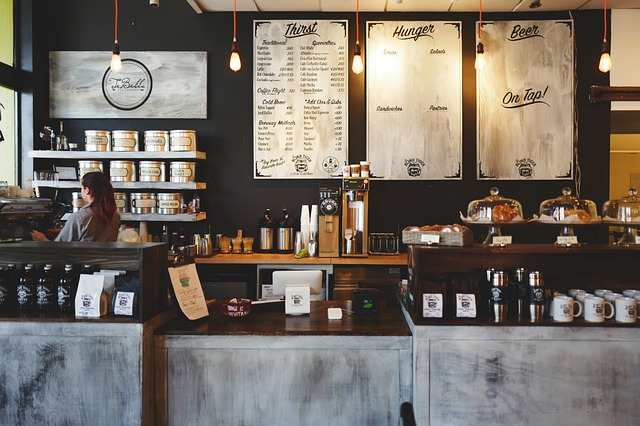

Bienvenido a Freuer Coffee, una encantadora cafetería familiar ubicada en Bella Vista, Argentina. Aquí, la pasión por el café de especialidad se entrelaza con el ambiente cálido y acogedor que solo una cafetería familiar puede ofrecer.
Al entrar por la puerta de Freuer Coffee, te envuelve un aroma embriagador que te transporta a un mundo de sabores y experiencias únicas.
El local está cuidadosamente decorado con toques rústicos y modernos, creando un ambiente acogedor y relajante donde cada detalle ha sido pensado para brindar una experiencia excepcional.

La esencia de Freuer Coffee reside en su café de especialidad cuidadosamente seleccionado. Los propietarios, una familia apasionada por el café, han establecido estrechas relaciones con productores locales y proveedores de renombre, asegurando que cada taza de café sea una obra maestra en sí misma. Desde los suaves y equilibrados sabores de los granos de origen único, hasta las notas sutiles de chocolate, caramelo o frutas exóticas, cada taza es una invitación a un viaje sensorial sin igual. La pasión y el conocimiento del equipo de baristas de Freuer Coffee son evidentes en cada taza que preparan. Con manos expertas y una dedicación apasionada, se esfuerzan por extraer lo mejor de cada grano, perfeccionando técnicas como el latte art para crear verdaderas obras de arte en cada bebida. Además, siempre están dispuestos a compartir su conocimiento y entablar conversaciones apasionantes sobre el café, brindando a los clientes una experiencia educativa y enriquecedora. La oferta gastronómica de Freuer Coffee no se queda atrás. Los sabores tradicionales de Argentina se fusionan con toques creativos en su selección de alimentos complementarios. Desde medialunas recién horneadas hasta alfajores rellenos de dulce de leche, cada bocado está diseñado para realzar la experiencia del café y satisfacer los paladares más exigentes.
Pero más allá del café excepcional y la deliciosa comida, lo que realmente distingue a Freuer Coffee es el ambiente familiar y acogedor que se respira en el lugar. Aquí, los clientes se convierten en amigos y cada visita se convierte en un reencuentro con seres queridos. La calidez de los propietarios y su personal atención aseguran que te sientas como en casa desde el momento en que cruzas el umbral. En Freuer Coffee, la pasión por el café de especialidad se combina con el amor por el arte de servir y crear momentos inolvidables. Ya sea que busques una taza de café para comenzar tu día o un lugar para relajarte y disfrutar de una conversación tranquila, aquí encontrarás un refugio donde el tiempo se detiene y los sabores se convierten en recuerdos duraderos. Ven y descubre Freuer Coffee, la cafetería familiar argentina donde el café de especialidad y la calidez humana se unen para crear una experiencia única en cada taza.
